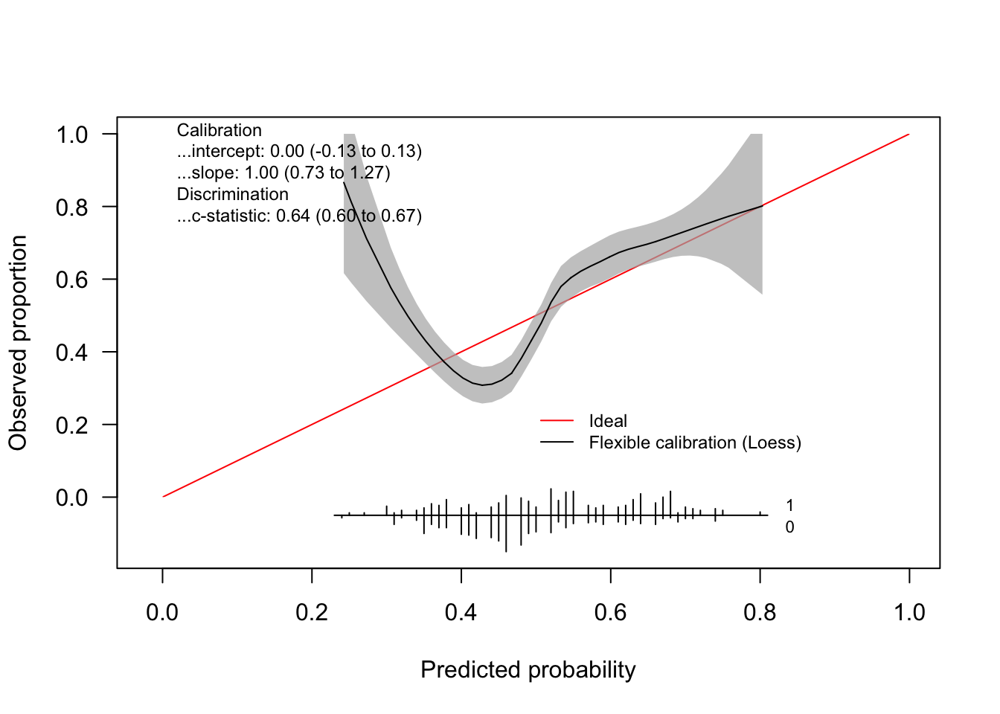

library(dplyr) # Data manipulation
library(tidyr) # Tidy messy data
library(ggplot2) # Data visualization
library(ggpubr) # ggarrange
library(patchwork)
library(fastDummies) # make dummy variables
library(rms)
library(pROC)
source("R/util.R")
# functions in "util.R"
# get_rcs: implement the formula of rcs components
# step_dummy: dummy variables
# step_rcs: rcs
# step_interaction: interaction terms
# step_center: centering
# get_mean: get mean values from the original dataset
# get_logLik: a function to manually calculate log likehood when some of the coefficients are manually changed
# root.search: Root searching, not in use in this .qmd file
source("R/calibration.R") # for calibration plotsCentered algorithms - Logistic regression
In this notebook, we will explain the issues of centered algorithm in logistic regression and explore the potential work-around. We will start with univariate analysis to get the math right. Then in “2.2 logistic_regression_real_data.qmd”, we will put everything together.
Dataset: Heart Disease Dataset
We will use the Heart Disease Dataset dataset for the examples.
About this dataset, see this [notebook] (https://www.kaggle.com/code/tentotheminus9/what-causes-heart-disease-explaining-the-model)
age: continuous. The person’s age in yearssex: categorical. The person’s sex (1 = male, 0 = female)cp: categorical. The chest pain experienced (0: typical angina, 1: atypical angina, 2: non-anginal pain, 3: asymptomatic)trestbps: continuous. The person’s resting blood pressure (in mm Hg on admission to the hospital)chol: continuous. The person’s serum cholestoral in mg/dlfbs: categorical. The person’s fasting blood sugar (> 120 mg/dl, 1 = true; 0 = false)restecg: categorical. Resting electrocardiographic measurement (0 = normal, 1 = having ST-T wave abnormality, 2 = showing probable or definite left ventricular hypertrophy by Estes’ criteria)thalach: continuous. The person’s maximum heart rate achievedexang: categorical. Exercise induced angina (0 = no; 1 = yes)oldpeak: continuous. ST depression induced by exercise relative to rest (‘ST’ relates to positions on the ECG plot. See more here)slope: categorical. the slope of the peak exercise ST segment (0: upsloping, 1: flat, 2: downsloping)ca: The number of major vessels (0-3) colored by flourosopythal: categorical. A blood disorder called thalassemia (1 = normal; 2 = fixed defect; 3 = reversable defect)target: Heart disease (0 = no, 1 = yes)
data <- read.csv("data/heart.csv", stringsAsFactors = TRUE)
dim(data) # there is no missing data in this dataset[1] 1025 14data <- data %>% mutate(thal = ifelse(thal == 0, 1, thal)) # 7 cases that thal == 0, collapse levels to 1`
data_num <- data
# categorical variables
vars_cat <- c("sex", "cp", "fbs", "restecg", "exang", "slope", "thal")
data[vars_cat] <- lapply(data[vars_cat], factor)
summary(data) age sex cp trestbps chol fbs restecg
Min. :29.00 0:312 0:497 Min. : 94.0 Min. :126 0:872 0:497
1st Qu.:48.00 1:713 1:167 1st Qu.:120.0 1st Qu.:211 1:153 1:513
Median :56.00 2:284 Median :130.0 Median :240 2: 15
Mean :54.43 3: 77 Mean :131.6 Mean :246
3rd Qu.:61.00 3rd Qu.:140.0 3rd Qu.:275
Max. :77.00 Max. :200.0 Max. :564
thalach exang oldpeak slope ca thal
Min. : 71.0 0:680 Min. :0.000 0: 74 Min. :0.0000 1: 71
1st Qu.:132.0 1:345 1st Qu.:0.000 1:482 1st Qu.:0.0000 2:544
Median :152.0 Median :0.800 2:469 Median :0.0000 3:410
Mean :149.1 Mean :1.072 Mean :0.7541
3rd Qu.:166.0 3rd Qu.:1.800 3rd Qu.:1.0000
Max. :202.0 Max. :6.200 Max. :4.0000
target
Min. :0.0000
1st Qu.:0.0000
Median :1.0000
Mean :0.5132
3rd Qu.:1.0000
Max. :1.0000 Logistic regression
For resources, see here and hear.
Formula of logistic regression: for a regression model with p predictors,
p(X) = \frac{e^{\beta_0 + \beta_1X_1 + ... + \beta_pX_p}}{1+e^{\beta_0 + \beta_1X_1 + ... + \beta_pX_p}}
The formula can also be written as:
\frac{p}{1-p} = e^{\beta_0 + \beta_1X_1 + ... + \beta_pX_p}
Also as:
ln(\frac{p}{1-p}) = \beta_0 + \beta_1X_1 + ... + \beta_pX_p
Then if the centering works as in linear regression (see quatro files 1.1 to 1.4), we would expect that, after centering, the new intercept
\beta_0^{centered} = ln(\frac{\overline{p}}{1-\overline{p}}),
where \overline{p} is the outcome mean/prevalence of the case.
The issue is that, with the simple centering, the adjusted intercept is not identical to the logit (log-odds) of the outcome mean. That is because logistic regression models are fitted using Maximum Likelihood Estimation (MLE) instead of least squares as in linear regression.
One categorical/dichotomous variable: sex
df <- data %>% select(sex, target)
# -------- dummy variables --------
vars_cat <- c("sex")
df <- step_dummy(df, vars_cat)
# -------- centering --------
vars_mean <- names(df)
# get mean values
means <- get_mean(df, vars_mean)
# centering vars
vars_center <- names(means)
df <- step_center(df, vars_center, means)
head(df) sex target sex_1 target_C sex_1_C
1 1 0 1 -0.5131707 0.3043902
2 1 0 1 -0.5131707 0.3043902
3 1 0 1 -0.5131707 0.3043902
4 1 0 1 -0.5131707 0.3043902
5 0 0 0 -0.5131707 -0.6956098
6 0 1 0 0.4868293 -0.6956098# fit the original model
fit.o <- glm(target ~ sex, data = df, family = "binomial")
# fit the centered model
fit.c <- glm(target ~ sex_1_C, data = df, family = "binomial")
# outcome mean
y_mean <- mean(df$target)
y_mean_logit <- log(y_mean/(1-y_mean))
paste0("Mean outcome: ", y_mean)[1] "Mean outcome: 0.513170731707317"paste0("Logit (log-odds) of the mean outcome: ", log(y_mean/(1-y_mean)))[1] "Logit (log-odds) of the mean outcome: 0.0526951169861911"# model coefficients
cbind(coef(fit.o), coef(fit.c)) [,1] [,2]
(Intercept) 0.9661877 0.07173594
sex1 -1.2858528 -1.28585282One simple work-around is to manually set the new intercept after centering using the logit of outcome mean. Below results confirm that this manual shifting only has a neglegible effect on the log likelihood, and no effect on AUC (because a constant shift doesn’t affect the ranking).
# centered model, with manually setting the intercept to the mean outcome
fit.c.2 <- fit.c
fit.c.2$coefficients[1] <- y_mean_logit
# model coefficients
cbind(coef(fit.o), coef(fit.c), coef(fit.c.2)) [,1] [,2] [,3]
(Intercept) 0.9661877 0.07173594 0.05269512
sex1 -1.2858528 -1.28585282 -1.28585282# prediction: note `fit.o` and `fit.c` have the same predicted value, while `fit.c.2` has a different one
df$pred.o <- predict(fit.o, newdata = df, type = "response")
df$pred.c <- predict(fit.c, newdata = df, type = "response")
df$pred.c.2 <- predict(fit.c.2, newdata = df, type = "response")
head(df %>% select(contains("pred"))) pred.o pred.c pred.c.2
1 0.4207574 0.4207574 0.4161239
2 0.4207574 0.4207574 0.4161239
3 0.4207574 0.4207574 0.4161239
4 0.4207574 0.4207574 0.4161239
5 0.7243590 0.7243590 0.7205410
6 0.7243590 0.7243590 0.7205410The log likelihood value can be manually calculated using function get_logLik, see R/util.R.
# log likelihood
# --- original model ---
paste0("Log likelihood of the original model, by extracting: ", logLik(fit.o))[1] "Log likelihood of the original model, by extracting: -668.923871748844"paste0("Log likelihood of the original model, by calculating: ", get_logLik(df$target, df$pred.o, coef(fit.o)))[1] "Log likelihood of the original model, by calculating: -668.923871748844"# --- centered model ---
paste0("Log likelihood of the centered model, by extracting: ", logLik(fit.c))[1] "Log likelihood of the centered model, by extracting: -668.923871748842"paste0("Log likelihood of the centered model, by calculating: ", get_logLik(df$target, df$pred.c, coef(fit.c)))[1] "Log likelihood of the centered model, by calculating: -668.923871748842"# --- centered model with adjusted intercept ---
paste0("Log likelihood of the centered model with adjusted intercept: ", get_logLik(df$target, df$pred.c.2, coef(fit.c.2)))[1] "Log likelihood of the centered model with adjusted intercept: -668.966665209023"# AUC
roc.o <- roc(df$target, df$pred.o, levels=c(0, 1), na.rm=TRUE, ci=TRUE) Setting direction: controls < casespaste0("AUC of the original model: ", roc.o$auc)[1] "AUC of the original model: 0.628656552649024"roc.c <- roc(df$target, df$pred.c, levels=c(0, 1), na.rm=TRUE, ci=TRUE) Setting direction: controls < casespaste0("AUC of the centered model: ", roc.c$auc)[1] "AUC of the centered model: 0.628656552649024"roc.c.2 <- roc(df$target, df$pred.c.2, levels=c(0, 1), na.rm=TRUE, ci=TRUE) Setting direction: controls < casespaste0("AUC of the centered model with a different intercept: ", roc.c.2$auc)[1] "AUC of the centered model with a different intercept: 0.628656552649024"One continuous variable: age
With one continuous variable, logit of the outcome mean and intercept of the centered algorithm are very close. Manually change the intercept will have even smaller effect on log likelihood and AUC.
df <- data %>% select(age, target)
# -------- centering --------
vars_mean <- names(df)
# get mean values
means <- get_mean(df, vars_mean)
# centering vars
vars_center <- names(means)
df <- step_center(df, vars_center, means)
head(df) age target age_C target_C
1 52 0 -2.434146 -0.5131707
2 53 0 -1.434146 -0.5131707
3 70 0 15.565854 -0.5131707
4 61 0 6.565854 -0.5131707
5 62 0 7.565854 -0.5131707
6 58 1 3.565854 0.4868293# fit the original model
fit.o <- glm(target ~ age, data = df, family = "binomial")
# fit the centered model
fit.c <- glm(target ~ age_C, data = df, family = "binomial")
# outcome mean
y_mean <- mean(df$target)
y_mean_logit <- log(y_mean/(1-y_mean))
paste0("Mean outcome: ", y_mean)[1] "Mean outcome: 0.513170731707317"paste0("Logit (log-odds) of the mean outcome: ", y_mean_logit)[1] "Logit (log-odds) of the mean outcome: 0.0526951169861911"# model coefficients
cbind(coef(fit.o), coef(fit.c)) [,1] [,2]
(Intercept) 2.9430034 0.05779796
age -0.0530036 -0.05300360# centered model, with manually setting the intercept to the mean outcome
fit.c.2 <- fit.c
fit.c.2$coefficients[1] <- y_mean_logit
# model coefficients
cbind(coef(fit.o), coef(fit.c), coef(fit.c.2)) [,1] [,2] [,3]
(Intercept) 2.9430034 0.05779796 0.05269512
age -0.0530036 -0.05300360 -0.05300360# prediction: note `fit.o` and `fit.c` have the same predicted value, while `fit.c.2` has a different one
df$pred.o <- predict(fit.o, newdata = df, type = "response")
df$pred.c <- predict(fit.c, newdata = df, type = "response")
df$pred.c.2 <- predict(fit.c.2, newdata = df, type = "response")
head(df %>% select(contains("pred"))) pred.o pred.c pred.c.2
1 0.5465688 0.5465688 0.5453038
2 0.5334034 0.5334034 0.5321332
3 0.3170747 0.3170747 0.3159707
4 0.4279510 0.4279510 0.4267023
5 0.4150276 0.4150276 0.4137893
6 0.4672457 0.4672457 0.4659757# log likelihood
# --- original model ---
paste0("Log likelihood of the original model, by extracting: ", logLik(fit.o))[1] "Log likelihood of the original model, by extracting: -682.532836184137"paste0("Log likelihood of the original model, by calculating: ", get_logLik(df$target, df$pred.o, coef(fit.o)))[1] "Log likelihood of the original model, by calculating: -682.532836184137"# --- centered model ---
paste0("Log likelihood of the centered model, by extracting: ", logLik(fit.c))[1] "Log likelihood of the centered model, by extracting: -682.532836184137"paste0("Log likelihood of the centered model, by calculating: ", get_logLik(df$target, df$pred.c, coef(fit.c)))[1] "Log likelihood of the centered model, by calculating: -682.532836184137"# --- centered model with adjusted intercept ---
paste0("Log likelihood of the centered model with adjusted intercept: ", get_logLik(df$target, df$pred.c.2, coef(fit.c.2)))[1] "Log likelihood of the centered model with adjusted intercept: -682.535994716329"# AUC
roc.o <- roc(df$target, df$pred.o, levels=c(0, 1), na.rm=TRUE, ci=TRUE) Setting direction: controls < casespaste0("AUC of the original model: ", roc.o$auc)[1] "AUC of the original model: 0.638707071938554"roc.c <- roc(df$target, df$pred.c, levels=c(0, 1), na.rm=TRUE, ci=TRUE) Setting direction: controls < casespaste0("AUC of the centered model: ", roc.c$auc)[1] "AUC of the centered model: 0.638707071938554"roc.c.2 <- roc(df$target, df$pred.c.2, levels=c(0, 1), na.rm=TRUE, ci=TRUE) Setting direction: controls < casespaste0("AUC of the centered model with a different intercept: ", roc.c.2$auc)[1] "AUC of the centered model with a different intercept: 0.638707071938554"Some calibration plots on the test dataset
# ---------- Overall calibration ----------
# The original model
res <- calibration(df$pred.o, df$target, marginPlt = TRUE)Warning in plot.window(...): "marginPlt" is not a graphical parameterWarning in plot.xy(xy, type, ...): "marginPlt" is not a graphical parameterWarning in axis(side = side, at = at, labels = labels, ...): "marginPlt" is not
a graphical parameter
Warning in axis(side = side, at = at, labels = labels, ...): "marginPlt" is not
a graphical parameterWarning in box(...): "marginPlt" is not a graphical parameterWarning in title(...): "marginPlt" is not a graphical parameter
resCall:
CalibrationCurves::val.prob.ci.2(p = prediction, y = outcome,
marginPlt = TRUE)
A 95% confidence interval is given for the calibration intercept, calibration slope and c-statistic.
Dxy C (ROC) R2 D D:Chi-sq
2.774141e-01 6.387071e-01 6.989069e-02 5.285341e-02 5.517475e+01
D:p U U:Chi-sq U:p Q
1.102451e-13 -1.951220e-03 6.366463e-12 1.000000e+00 5.480463e-02
Brier Intercept Slope Emax Brier scaled
2.364557e-01 7.276680e-14 1.000000e+00 1.078027e-13 5.352043e-02
Eavg ECI
7.620147e-02 9.930466e-01 # The centered model
res <- calibration(df$pred.c, df$target, marginPlt = TRUE)Warning in plot.window(...): "marginPlt" is not a graphical parameterWarning in plot.xy(xy, type, ...): "marginPlt" is not a graphical parameterWarning in axis(side = side, at = at, labels = labels, ...): "marginPlt" is not
a graphical parameter
Warning in axis(side = side, at = at, labels = labels, ...): "marginPlt" is not
a graphical parameterWarning in box(...): "marginPlt" is not a graphical parameterWarning in title(...): "marginPlt" is not a graphical parameter
resCall:
CalibrationCurves::val.prob.ci.2(p = prediction, y = outcome,
marginPlt = TRUE)
A 95% confidence interval is given for the calibration intercept, calibration slope and c-statistic.
Dxy C (ROC) R2 D D:Chi-sq
2.774141e-01 6.387071e-01 6.989069e-02 5.285341e-02 5.517475e+01
D:p U U:Chi-sq U:p Q
1.102451e-13 -1.951220e-03 6.366463e-12 1.000000e+00 5.480463e-02
Brier Intercept Slope Emax Brier scaled
2.364557e-01 7.117779e-14 1.000000e+00 1.071365e-13 5.352043e-02
Eavg ECI
7.620147e-02 9.930466e-01 # The centered model, with manually setting the intercept to the mean outcome
res <- calibration(df$pred.c.2, df$target, marginPlt = TRUE)Warning in plot.window(...): "marginPlt" is not a graphical parameterWarning in plot.xy(xy, type, ...): "marginPlt" is not a graphical parameterWarning in axis(side = side, at = at, labels = labels, ...): "marginPlt" is not
a graphical parameter
Warning in axis(side = side, at = at, labels = labels, ...): "marginPlt" is not
a graphical parameterWarning in box(...): "marginPlt" is not a graphical parameterWarning in title(...): "marginPlt" is not a graphical parameterresCall:
CalibrationCurves::val.prob.ci.2(p = prediction, y = outcome,
marginPlt = TRUE)
A 95% confidence interval is given for the calibration intercept, calibration slope and c-statistic.
Dxy C (ROC) R2 D D:Chi-sq
2.774141e-01 6.387071e-01 6.989069e-02 5.285341e-02 5.517475e+01
D:p U U:Chi-sq U:p Q
1.102451e-13 -1.945057e-03 6.317064e-03 9.968465e-01 5.479847e-02
Brier Intercept Slope Emax Brier scaled
2.364489e-01 5.102839e-03 1.000000e+00 1.275709e-03 5.354768e-02
Eavg ECI
7.637083e-02 9.929849e-01